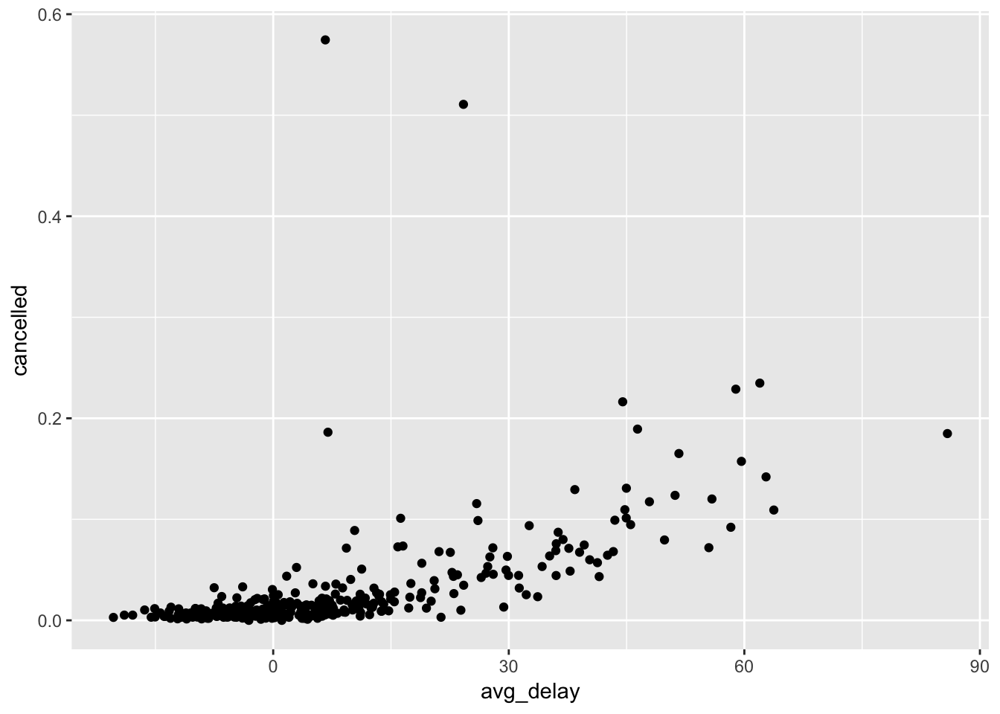
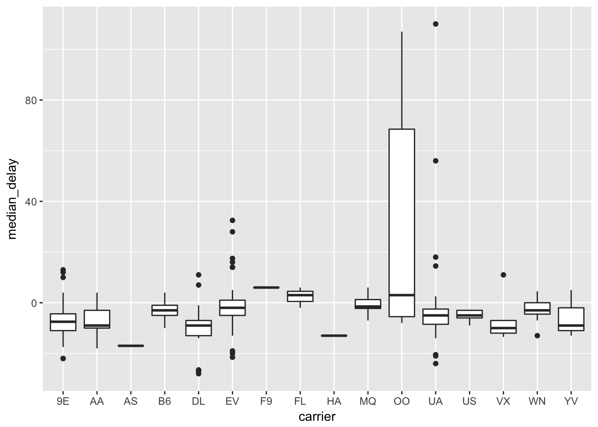
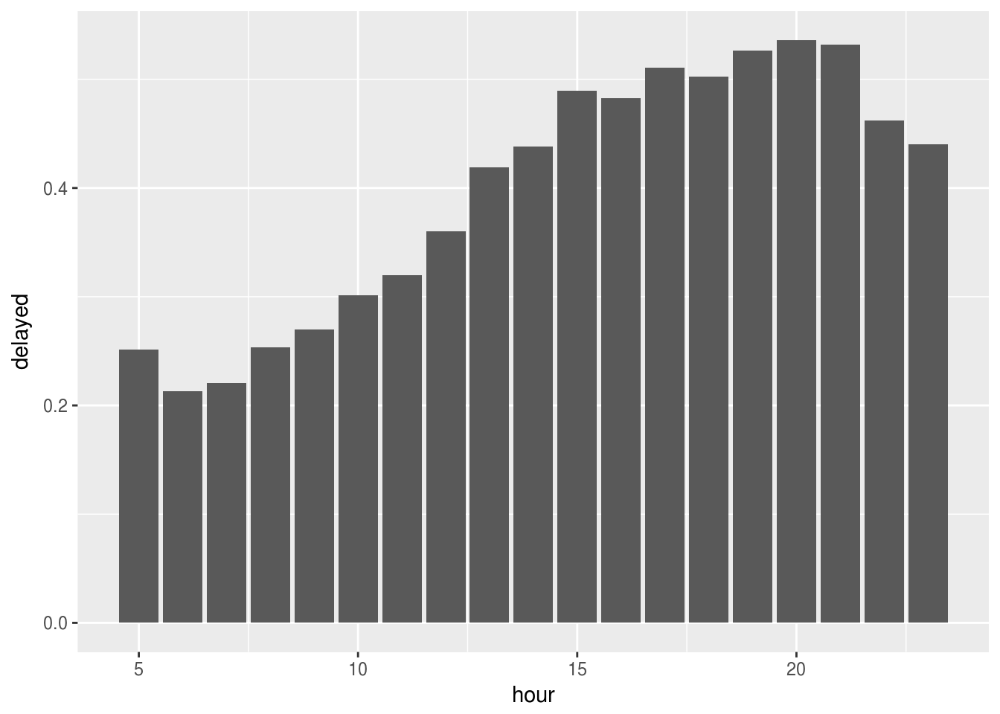

Chapter 5 - Data Transformation
Load the libraries needed for these exercises.
library(tidyverse)
library(nycflights13)5.2 - Filter Rows with filter()
Problem 1
Find all flights that:
- Had an arrival delay of two or more hours
flights %>%
filter(arr_delay >= 120) %>%
count()## # A tibble: 1 x 1
## n
## <int>
## 1 10200- Flew to Houston (IAH or HOU)
flights %>%
filter(dest %in% c('IAH', 'HOU')) %>%
count()## # A tibble: 1 x 1
## n
## <int>
## 1 9313- Were operated by United, American, or Delta
flights %>%
filter(carrier %in% c('UA', 'AA', 'DL')) %>%
count()## # A tibble: 1 x 1
## n
## <int>
## 1 139504- Departed in summer (July, August, and September)
flights %>%
filter(month %in% c(7, 8, 9)) %>%
count()## # A tibble: 1 x 1
## n
## <int>
## 1 86326- Arrived more than two hours late, but didn’t leave late
flights %>%
filter(arr_delay >= 120, dep_delay <= 0) %>%
count()## # A tibble: 1 x 1
## n
## <int>
## 1 29- Were delayed by at least an hour, but made up over 30 minutes in flight
flights %>%
filter(dep_delay >= 60, arr_delay <= dep_delay - 30) %>%
count()## # A tibble: 1 x 1
## n
## <int>
## 1 2074- Departed between midnight and 6am (inclusive)
flights %>%
filter(dep_time >= 0, dep_time <= 600) %>%
count()## # A tibble: 1 x 1
## n
## <int>
## 1 9344Problem 2
Another useful dplyr filtering helper is between(). What does it do? Can you use it to simplify the code needed to answer the previous challenges?
between() is a shortcut for x >= left & x <= right. We can simplify the last answer to Problem 1 as:
flights %>%
filter(between(dep_time, 0, 600)) %>%
count()## # A tibble: 1 x 1
## n
## <int>
## 1 9344Problem 3
How many flights have a missing dep_time? What other variables are missing? What might these rows represent?
We use is.na() to filter the flights with a missing departure time.
flights %>%
filter(is.na(dep_time)) %>%
count()## # A tibble: 1 x 1
## n
## <int>
## 1 8255Using summary() to see the breakout of the other variables, there appear to be flights that were cancelled.
flights %>%
filter(is.na(dep_time)) %>%
summary()## year month day dep_time
## Min. :2013 Min. : 1.000 Min. : 1.0 Min. : NA
## 1st Qu.:2013 1st Qu.: 3.000 1st Qu.: 8.0 1st Qu.: NA
## Median :2013 Median : 6.000 Median :12.0 Median : NA
## Mean :2013 Mean : 5.927 Mean :14.6 Mean :NaN
## 3rd Qu.:2013 3rd Qu.: 8.000 3rd Qu.:23.0 3rd Qu.: NA
## Max. :2013 Max. :12.000 Max. :31.0 Max. : NA
## NA's :8255
## sched_dep_time dep_delay arr_time sched_arr_time
## Min. : 106 Min. : NA Min. : NA Min. : 1
## 1st Qu.:1159 1st Qu.: NA 1st Qu.: NA 1st Qu.:1330
## Median :1559 Median : NA Median : NA Median :1749
## Mean :1492 Mean :NaN Mean :NaN Mean :1669
## 3rd Qu.:1855 3rd Qu.: NA 3rd Qu.: NA 3rd Qu.:2049
## Max. :2359 Max. : NA Max. : NA Max. :2359
## NA's :8255 NA's :8255
## arr_delay carrier flight tailnum
## Min. : NA Length:8255 Min. : 1 Length:8255
## 1st Qu.: NA Class :character 1st Qu.:1577 Class :character
## Median : NA Mode :character Median :3535 Mode :character
## Mean :NaN Mean :3063
## 3rd Qu.: NA 3rd Qu.:4373
## Max. : NA Max. :6177
## NA's :8255
## origin dest air_time distance
## Length:8255 Length:8255 Min. : NA Min. : 17.0
## Class :character Class :character 1st Qu.: NA 1st Qu.: 292.0
## Mode :character Mode :character Median : NA Median : 583.0
## Mean :NaN Mean : 695.4
## 3rd Qu.: NA 3rd Qu.: 872.0
## Max. : NA Max. :4963.0
## NA's :8255
## hour minute time_hour
## Min. : 1.00 Min. : 0.00 Min. :2013-01-01 06:00:00
## 1st Qu.:11.00 1st Qu.: 5.00 1st Qu.:2013-03-07 07:00:00
## Median :15.00 Median :27.00 Median :2013-06-12 18:00:00
## Mean :14.67 Mean :25.61 Mean :2013-06-13 06:42:11
## 3rd Qu.:18.00 3rd Qu.:42.00 3rd Qu.:2013-08-22 15:30:00
## Max. :23.00 Max. :59.00 Max. :2013-12-31 20:00:00
## Problem 4
Why is NA ^ 0 not missing? Why is NA | TRUE not missing? Why is FALSE & NA not missing? Can you figure out the general rule? (NA * 0 is a tricky counterexample!)
Working through these examples: * Anything to the zero power is 1 * Anything OR TRUE is TRUE * Anything AND FALSE is FALSE
These results apply no matter what the LHS side, and so will apply to NA as well.
NA ^ 0## [1] 1NA | TRUE## [1] TRUENA & FALSE## [1] FALSEHowever operations on NA will return NA. NA * 0 is counter intuitive since you would think that anything multiplied by 0 would be 0.
NA * 0## [1] NANA ^ 2## [1] NANA + 1## [1] NA5.3 - Arrange Rows with arrange()
Problem 1
How could you use arrange() to sort all missing values to the start? (Hint: use is.na()).
We can sort missing values using the format:
flights %>%
arrange(desc(is.na(dep_time))) %>%
head()## # A tibble: 6 x 19
## year month day dep_time sched_dep_time dep_delay arr_time
## <int> <int> <int> <int> <int> <dbl> <int>
## 1 2013 1 1 NA 1630 NA NA
## 2 2013 1 1 NA 1935 NA NA
## 3 2013 1 1 NA 1500 NA NA
## 4 2013 1 1 NA 600 NA NA
## 5 2013 1 2 NA 1540 NA NA
## 6 2013 1 2 NA 1620 NA NA
## # ... with 12 more variables: sched_arr_time <int>, arr_delay <dbl>,
## # carrier <chr>, flight <int>, tailnum <chr>, origin <chr>, dest <chr>,
## # air_time <dbl>, distance <dbl>, hour <dbl>, minute <dbl>,
## # time_hour <dttm>Problem 2
Sort flights to find the most delayed flights. Find the flights that left earliest.
The most delayed flights (by arr_delay) are:
flights %>%
arrange(desc(arr_delay)) %>%
head()## # A tibble: 6 x 19
## year month day dep_time sched_dep_time dep_delay arr_time
## <int> <int> <int> <int> <int> <dbl> <int>
## 1 2013 1 9 641 900 1301. 1242
## 2 2013 6 15 1432 1935 1137. 1607
## 3 2013 1 10 1121 1635 1126. 1239
## 4 2013 9 20 1139 1845 1014. 1457
## 5 2013 7 22 845 1600 1005. 1044
## 6 2013 4 10 1100 1900 960. 1342
## # ... with 12 more variables: sched_arr_time <int>, arr_delay <dbl>,
## # carrier <chr>, flight <int>, tailnum <chr>, origin <chr>, dest <chr>,
## # air_time <dbl>, distance <dbl>, hour <dbl>, minute <dbl>,
## # time_hour <dttm>The flights that left earliest (by dep_delay) are:
flights %>%
arrange(dep_delay) %>%
head()## # A tibble: 6 x 19
## year month day dep_time sched_dep_time dep_delay arr_time
## <int> <int> <int> <int> <int> <dbl> <int>
## 1 2013 12 7 2040 2123 -43. 40
## 2 2013 2 3 2022 2055 -33. 2240
## 3 2013 11 10 1408 1440 -32. 1549
## 4 2013 1 11 1900 1930 -30. 2233
## 5 2013 1 29 1703 1730 -27. 1947
## 6 2013 8 9 729 755 -26. 1002
## # ... with 12 more variables: sched_arr_time <int>, arr_delay <dbl>,
## # carrier <chr>, flight <int>, tailnum <chr>, origin <chr>, dest <chr>,
## # air_time <dbl>, distance <dbl>, hour <dbl>, minute <dbl>,
## # time_hour <dttm>Problem 3
Sort flights to find the fastest flights.
We first calculate average speed in MPH as distance / hours in the air, and sort on the calculated variable.
flights %>%
mutate(speed = distance / (air_time / 60)) %>%
arrange(desc(speed)) %>%
select(speed) %>%
head()## # A tibble: 6 x 1
## speed
## <dbl>
## 1 703.
## 2 650.
## 3 648.
## 4 641.
## 5 591.
## 6 564.Problem 4
Which flights traveled the longest? Which traveled the shortest?
The longest flights are:
flights %>%
arrange(desc(distance)) %>%
head()## # A tibble: 6 x 19
## year month day dep_time sched_dep_time dep_delay arr_time
## <int> <int> <int> <int> <int> <dbl> <int>
## 1 2013 1 1 857 900 -3. 1516
## 2 2013 1 2 909 900 9. 1525
## 3 2013 1 3 914 900 14. 1504
## 4 2013 1 4 900 900 0. 1516
## 5 2013 1 5 858 900 -2. 1519
## 6 2013 1 6 1019 900 79. 1558
## # ... with 12 more variables: sched_arr_time <int>, arr_delay <dbl>,
## # carrier <chr>, flight <int>, tailnum <chr>, origin <chr>, dest <chr>,
## # air_time <dbl>, distance <dbl>, hour <dbl>, minute <dbl>,
## # time_hour <dttm>The shortest flights are:
flights %>%
arrange(distance) %>%
head()## # A tibble: 6 x 19
## year month day dep_time sched_dep_time dep_delay arr_time
## <int> <int> <int> <int> <int> <dbl> <int>
## 1 2013 7 27 NA 106 NA NA
## 2 2013 1 3 2127 2129 -2. 2222
## 3 2013 1 4 1240 1200 40. 1333
## 4 2013 1 4 1829 1615 134. 1937
## 5 2013 1 4 2128 2129 -1. 2218
## 6 2013 1 5 1155 1200 -5. 1241
## # ... with 12 more variables: sched_arr_time <int>, arr_delay <dbl>,
## # carrier <chr>, flight <int>, tailnum <chr>, origin <chr>, dest <chr>,
## # air_time <dbl>, distance <dbl>, hour <dbl>, minute <dbl>,
## # time_hour <dttm>5.4 - Select Columns with select()
Problem 1
Brainstorm as many ways as possible to select dep_time, dep_delay, arr_time, and arr_delay from flights.
We can put all the variables directly into our select() statement:
flights %>%
select(dep_time, dep_delay, arr_time, arr_delay) %>%
head()## # A tibble: 6 x 4
## dep_time dep_delay arr_time arr_delay
## <int> <dbl> <int> <dbl>
## 1 517 2. 830 11.
## 2 533 4. 850 20.
## 3 542 2. 923 33.
## 4 544 -1. 1004 -18.
## 5 554 -6. 812 -25.
## 6 554 -4. 740 12.Or this would be a good place to try the starts_with() function:
flights %>%
select(starts_with("dep"), starts_with("arr"))## # A tibble: 336,776 x 4
## dep_time dep_delay arr_time arr_delay
## <int> <dbl> <int> <dbl>
## 1 517 2. 830 11.
## 2 533 4. 850 20.
## 3 542 2. 923 33.
## 4 544 -1. 1004 -18.
## 5 554 -6. 812 -25.
## 6 554 -4. 740 12.
## 7 555 -5. 913 19.
## 8 557 -3. 709 -14.
## 9 557 -3. 838 -8.
## 10 558 -2. 753 8.
## # ... with 336,766 more rowsOr we can try a regex using matches()
flights %>%
select(matches("^dep"), matches("^arr")) %>%
head()## # A tibble: 6 x 4
## dep_time dep_delay arr_time arr_delay
## <int> <dbl> <int> <dbl>
## 1 517 2. 830 11.
## 2 533 4. 850 20.
## 3 542 2. 923 33.
## 4 544 -1. 1004 -18.
## 5 554 -6. 812 -25.
## 6 554 -4. 740 12.Problem 2
What happens if you include the name of a variable multiple times in a select() call?
Duplicating a variable within select() will still just return that variable one time:
flights %>%
select(dep_time, dep_time) %>%
head()## # A tibble: 6 x 1
## dep_time
## <int>
## 1 517
## 2 533
## 3 542
## 4 544
## 5 554
## 6 554Problem 3
What does the one_of() function do? Why might it be helpful in conjunction with this vector?
one_of() allows you select variables from within a character vector. We can pass vars to select everything from the vector:
vars <- c("year", "month", "day", "dep_delay", "arr_delay")
flights %>%
select(one_of(vars))## # A tibble: 336,776 x 5
## year month day dep_delay arr_delay
## <int> <int> <int> <dbl> <dbl>
## 1 2013 1 1 2. 11.
## 2 2013 1 1 4. 20.
## 3 2013 1 1 2. 33.
## 4 2013 1 1 -1. -18.
## 5 2013 1 1 -6. -25.
## 6 2013 1 1 -4. 12.
## 7 2013 1 1 -5. 19.
## 8 2013 1 1 -3. -14.
## 9 2013 1 1 -3. -8.
## 10 2013 1 1 -2. 8.
## # ... with 336,766 more rowsProblem 4
Does the result of running the following code surprise you? How do the select helpers deal with case by default? How can you change that default?
select(flights, contains("TIME")) %>%
head()## # A tibble: 6 x 6
## dep_time sched_dep_time arr_time sched_arr_time air_time
## <int> <int> <int> <int> <dbl>
## 1 517 515 830 819 227.
## 2 533 529 850 830 227.
## 3 542 540 923 850 160.
## 4 544 545 1004 1022 183.
## 5 554 600 812 837 116.
## 6 554 558 740 728 150.
## # ... with 1 more variable: time_hour <dttm>contains() contains an argument ignore.case which defaults to TRUE, we can set this to FALSE if needed:
select(flights, contains("TIME", ignore.case = FALSE)) %>%
head()## # A tibble: 6 x 05.5 - Add New Variables with mutate()
Problem 1
Currently dep_time and sched_dep_time are convenient to look at, but hard to compute with because they’re not really continuous numbers. Convert them to a more convenient representation of number of minutes since midnight.
Use the modular arithmetic operators to break the time into its hours and minute components:
flights %>%
select(dep_time, sched_dep_time) %>%
mutate(dep_time_cont = ((dep_time %/% 100) * 60 + (dep_time %% 100)),
sched_dep_time_cont = ((sched_dep_time %/% 100) * 60 + (sched_dep_time %% 100))) %>%
head()## # A tibble: 6 x 4
## dep_time sched_dep_time dep_time_cont sched_dep_time_cont
## <int> <int> <dbl> <dbl>
## 1 517 515 317. 315.
## 2 533 529 333. 329.
## 3 542 540 342. 340.
## 4 544 545 344. 345.
## 5 554 600 354. 360.
## 6 554 558 354. 358.Problem 2
Compare air_time with arr_time - dep_time. What do you expect to see? What do you see? What do you need to do to fix it?
The issue is that air_time is in minutes, while arr_time and dep_time are not:
flights %>%
mutate(air_time_derived = arr_time - dep_time) %>%
select(air_time, air_time_derived) %>%
head()## # A tibble: 6 x 2
## air_time air_time_derived
## <dbl> <int>
## 1 227. 313
## 2 227. 317
## 3 160. 381
## 4 183. 460
## 5 116. 258
## 6 150. 186Instead use the mutate() statement from Problem 1, however the two differ:
flights %>%
mutate(dep_time_cont = ((dep_time %/% 100) * 60 + (dep_time %% 100)),
arr_time_cont = ((arr_time %/% 100) * 60 + (arr_time %% 100)),
air_time_derived = arr_time_cont - dep_time_cont) %>%
select(air_time, air_time_derived) %>%
head()## # A tibble: 6 x 2
## air_time air_time_derived
## <dbl> <dbl>
## 1 227. 193.
## 2 227. 197.
## 3 160. 221.
## 4 183. 260.
## 5 116. 138.
## 6 150. 106.Problem 3
Compare dep_time, sched_dep_time, and dep_delay. How would you expect those three numbers to be related?
We would expect dep_delay to be the difference between the dep_time and the sched_dep_time. But be sure to convert from time to continuous first:
flights %>%
mutate(dep_time_cont = ((dep_time %/% 100) * 60 + (dep_time %% 100)),
sched_dep_time_cont = ((sched_dep_time %/% 100) * 60 + (sched_dep_time %% 100)),
dep_delay_derived = dep_time_cont - sched_dep_time_cont) %>%
select(dep_delay, dep_delay_derived) %>%
head()## # A tibble: 6 x 2
## dep_delay dep_delay_derived
## <dbl> <dbl>
## 1 2. 2.
## 2 4. 4.
## 3 2. 2.
## 4 -1. -1.
## 5 -6. -6.
## 6 -4. -4.Problem 4
Find the 10 most delayed flights using a ranking function. How do you want to handle ties? Carefully read the documentation for min_rank().
We’ll use min_rank() to rank the flights by arr_delay:
flights %>%
select(arr_delay) %>%
mutate(most_delayed = min_rank(-arr_delay)) %>%
filter(most_delayed <= 10) %>%
arrange(most_delayed)## # A tibble: 10 x 2
## arr_delay most_delayed
## <dbl> <int>
## 1 1272. 1
## 2 1127. 2
## 3 1109. 3
## 4 1007. 4
## 5 989. 5
## 6 931. 6
## 7 915. 7
## 8 895. 8
## 9 878. 9
## 10 875. 10Problem 5
What does 1:3 + 1:10 return? Why?
We get an error because 1:3 + 1:10 are not multiples of each other:
1:3 + 1:10## Warning in 1:3 + 1:10: longer object length is not a multiple of shorter
## object length## [1] 2 4 6 5 7 9 8 10 12 11Think through what is happening under the hood. This operation is recycling the shorter vector:
- 1 + 1
- 2 + 2
- 3 + 3
- 4 + 1
- 5 + 2
- 6 + 3
- 7 + 1
- 8 + 2
- 9 + 3
- 10 + 1 - error because
1:3has not been fully cycled through
So the following will not return an error:
1:3 + 1:12## [1] 2 4 6 5 7 9 8 10 12 11 13 15Problem 6
What trigonometric functions does R provide?
R has the following trig functions within base:
- cos(x)
- sin(x)
tan(x)
- acos(x)
- asin(x)
- atan(x)
atan2(y, x)
- cospi(x)
- sinpi(x)
tanpi(x)
Note that angles are given in radians:
cos(pi * 0.25)## [1] 0.7071068# cospi(x) is equivalent to cos(pi * x)
cospi(0.25)## [1] 0.70710685.6 - Grouped summaries with summarise()
Problem 1
Brainstorm at least 5 different ways to assess the typical delay characteristics of a group of flights. Consider the following scenarios:
- A flight is 15 minutes early 50% of the time, and 15 minutes late 50% of the time.
flights %>%
group_by(flight) %>%
summarise(fifteen_early = mean(arr_delay <= -15, na.rm = TRUE),
fifteen_late = mean(arr_delay >= 15, na.rm = TRUE)) %>%
filter(fifteen_early == 0.50,
fifteen_late == 0.50)## # A tibble: 21 x 3
## flight fifteen_early fifteen_late
## <int> <dbl> <dbl>
## 1 107 0.500 0.500
## 2 2072 0.500 0.500
## 3 2366 0.500 0.500
## 4 2500 0.500 0.500
## 5 2552 0.500 0.500
## 6 3495 0.500 0.500
## 7 3505 0.500 0.500
## 8 3518 0.500 0.500
## 9 3544 0.500 0.500
## 10 3651 0.500 0.500
## # ... with 11 more rows- A flight is always 10 minutes late.
flights %>%
group_by(flight) %>%
summarise(ten_late = mean(arr_delay == 10, na.rm = TRUE)) %>%
filter(ten_late == 1.00)## # A tibble: 5 x 2
## flight ten_late
## <int> <dbl>
## 1 2254 1.
## 2 3656 1.
## 3 3785 1.
## 4 3880 1.
## 5 5854 1.- A flight is 30 minutes early 50% of the time, and 30 minutes late 50% of the time.
flights %>%
group_by(flight) %>%
summarise(thirty_early = mean(arr_delay <= -30, na.rm = TRUE),
thirty_late = mean(arr_delay >= 30, na.rm = TRUE)) %>%
filter(thirty_early == 0.50,
thirty_late == 0.50)## # A tibble: 3 x 3
## flight thirty_early thirty_late
## <int> <dbl> <dbl>
## 1 3651 0.500 0.500
## 2 3916 0.500 0.500
## 3 3951 0.500 0.500- 99% of the time a flight is on time. 1% of the time it’s 2 hours late.
flights %>%
group_by(flight) %>%
summarise(on_time = mean(arr_delay <= 0, na.rm = TRUE),
late = mean(arr_delay >= 120, na.rm = TRUE)) %>%
filter(on_time == 0.99,
late == 0.01)## # A tibble: 0 x 3
## # ... with 3 variables: flight <int>, on_time <dbl>, late <dbl>Problem 2
Come up with another approach that will give you the same output as not_cancelled %>% count(dest) and not_cancelled %>% count(tailnum, wt = distance) (without using count()).
First setup the not_cancelled data set.
not_cancelled <- flights %>%
filter(!is.na(dep_delay), !is.na(arr_delay))The first chunk of code gives us the following output:
not_cancelled %>%
count(dest)## # A tibble: 104 x 2
## dest n
## <chr> <int>
## 1 ABQ 254
## 2 ACK 264
## 3 ALB 418
## 4 ANC 8
## 5 ATL 16837
## 6 AUS 2411
## 7 AVL 261
## 8 BDL 412
## 9 BGR 358
## 10 BHM 269
## # ... with 94 more rowsWe can replicate this without using count() by doing a group_by() on dest:
not_cancelled %>%
group_by(dest) %>%
summarise(n = n())## # A tibble: 104 x 2
## dest n
## <chr> <int>
## 1 ABQ 254
## 2 ACK 264
## 3 ALB 418
## 4 ANC 8
## 5 ATL 16837
## 6 AUS 2411
## 7 AVL 261
## 8 BDL 412
## 9 BGR 358
## 10 BHM 269
## # ... with 94 more rowsThe second chunk of code gives us:
not_cancelled %>%
count(tailnum, wt = distance)## # A tibble: 4,037 x 2
## tailnum n
## <chr> <dbl>
## 1 D942DN 3418.
## 2 N0EGMQ 239143.
## 3 N10156 109664.
## 4 N102UW 25722.
## 5 N103US 24619.
## 6 N104UW 24616.
## 7 N10575 139903.
## 8 N105UW 23618.
## 9 N107US 21677.
## 10 N108UW 32070.
## # ... with 4,027 more rowsAgain we can avoid using count by doing a group_by() on tailnum. Since wt = distance gives the total number of miles flown, we use sum() instead:
not_cancelled %>%
group_by(tailnum) %>%
summarise(n = sum(distance))## # A tibble: 4,037 x 2
## tailnum n
## <chr> <dbl>
## 1 D942DN 3418.
## 2 N0EGMQ 239143.
## 3 N10156 109664.
## 4 N102UW 25722.
## 5 N103US 24619.
## 6 N104UW 24616.
## 7 N10575 139903.
## 8 N105UW 23618.
## 9 N107US 21677.
## 10 N108UW 32070.
## # ... with 4,027 more rowsProblem 3
Our definition of cancelled flights (is.na(dep_delay) | is.na(arr_delay) ) is slightly suboptimal. Why? Which is the most important column?
arr_delay is the more important of the two columns - filtering on arr_delay alone will give the same subset:
flights %>%
summarise(suboptimal = sum(is.na(dep_delay) | is.na(arr_delay)),
optimal = sum(is.na(arr_delay)))## # A tibble: 1 x 2
## suboptimal optimal
## <int> <int>
## 1 9430 9430Problem 4
Look at the number of cancelled flights per day. Is there a pattern? Is the proportion of cancelled flights related to the average delay?
There is a generally positive trend between average delay and the proportion of cancelled flights, with a couple of outliers.
flights %>%
mutate(date = lubridate::make_date(year, month, day)) %>%
group_by(date) %>%
summarise(cancelled = mean(is.na(arr_delay)),
avg_delay = mean(arr_delay, na.rm = TRUE)) %>%
ggplot(aes(avg_delay, cancelled)) +
geom_point()
A lot of flights were cancelled on February 8th and 9th, although the average delays those days were not that large - a snowstorm hit the region that weekend, with a lot of flights preemptively cancelled.
flights %>%
mutate(date = lubridate::make_date(year, month, day)) %>%
group_by(date) %>%
summarise(cancelled = mean(is.na(arr_delay)),
avg_delay = mean(arr_delay, na.rm = TRUE)) %>%
arrange(desc(cancelled)) %>%
head()## # A tibble: 6 x 3
## date cancelled avg_delay
## <date> <dbl> <dbl>
## 1 2013-02-09 0.575 6.64
## 2 2013-02-08 0.511 24.2
## 3 2013-05-23 0.235 62.0
## 4 2013-09-12 0.229 58.9
## 5 2013-12-10 0.216 44.5
## 6 2013-12-14 0.189 46.4Problem 5
Which carrier has the worst delays? Challenge: can you disentangle the effects of bad airports vs. bad carriers? Why/why not? (Hint: think about flights %>% group_by(carrier, dest) %>% summarise(n())
At first glance, Frontier and AirTran seem to have the worst delays.
flights %>%
group_by(carrier) %>%
summarise(median_delay = median(arr_delay, na.rm = TRUE)) %>%
arrange(desc(median_delay))## # A tibble: 16 x 2
## carrier median_delay
## <chr> <dbl>
## 1 F9 6.
## 2 FL 5.
## 3 EV -1.
## 4 MQ -1.
## 5 YV -2.
## 6 B6 -3.
## 7 WN -3.
## 8 UA -6.
## 9 US -6.
## 10 9E -7.
## 11 OO -7.
## 12 DL -8.
## 13 AA -9.
## 14 VX -9.
## 15 HA -13.
## 16 AS -17.We can try to get a better sense of bad airlines vs bad airports by grouping by both, but this will be thrown off by carrier-dest combinations that occur infrequently.
flights %>%
group_by(carrier, dest) %>%
summarise(median_delay = median(arr_delay, na.rm = TRUE)) %>%
ggplot(aes(carrier, median_delay)) +
geom_boxplot()## Warning: Removed 2 rows containing non-finite values (stat_boxplot).
Problem 6
What does the sort argument to count() do. When might you use it?
The sort argument will arrange count() in descending order. If we quickly wanted to find the most popular destinations, we could do:
flights %>%
group_by(dest) %>%
count(sort = TRUE) %>%
head()## # A tibble: 6 x 2
## # Groups: dest [6]
## dest n
## <chr> <int>
## 1 ORD 17283
## 2 ATL 17215
## 3 LAX 16174
## 4 BOS 15508
## 5 MCO 14082
## 6 CLT 140645.7 - Grouped Mutates (and Filters)
Problem 1
Refer back to the lists of useful mutate and filtering functions. Describe how each operation changes when you combine it with grouping.
Problem 2
Which plane (tailnum) has the worst on-time record?
We do a familiar group_by()-summarise() to calculate the proportion of flights with an arr_delay less than or equal to 0, and then apply a filter to see the on-time performance of planes with more than twenty flights.
flights %>%
group_by(tailnum) %>%
summarise(flights = n(),
on_time = mean(arr_delay <= 0, na.rm = TRUE)) %>%
select(tailnum, flights, on_time) %>%
filter(flights > 20) %>%
arrange(on_time) %>%
head()## # A tibble: 6 x 3
## tailnum flights on_time
## <chr> <int> <dbl>
## 1 N988AT 37 0.200
## 2 N983AT 32 0.250
## 3 N980AT 47 0.255
## 4 N969AT 34 0.265
## 5 N932AT 30 0.267
## 6 N149AT 22 0.273Problem 3
What time of day should you fly if you want to avoid delays as much as possible?
It appears that flights later in day have a greater chance of being delayed than those early in the morning.
flights %>%
group_by(hour) %>%
filter(!is.na(dep_delay)) %>%
summarise(delayed = mean(dep_delay > 0, na.rm = TRUE)) %>%
ggplot(aes(x = hour, y = delayed)) +
geom_col()
Problem 4
For each destination, compute the total minutes of delay. For each flight, compute the proportion of the total delay for its destination.
A grouped mutate comes in handy here, as we can first calculate the total minutes of delay for each destination and then use that value to compute the proportion of the total delay attributable to each flight.
flights %>%
group_by(dest) %>%
filter(arr_delay > 0) %>%
mutate(total_delay = sum(arr_delay),
prop_delay = arr_delay / sum(arr_delay)) %>%
select(dest, flight, total_delay, prop_delay) %>%
arrange(desc(total_delay)) %>%
head()## # A tibble: 6 x 4
## # Groups: dest [1]
## dest flight total_delay prop_delay
## <chr> <int> <dbl> <dbl>
## 1 ATL 4650 300299. 0.0000400
## 2 ATL 1547 300299. 0.0000167
## 3 ATL 346 300299. 0.0000566
## 4 ATL 4654 300299. 0.0000200
## 5 ATL 347 300299. 0.00000666
## 6 ATL 4876 300299. 0.0000366Problem 5
Delays are typically temporally correlated: even once the problem that caused the initial delay has been resolved, later flights are delayed to allow earlier flights to leave. Using lag() explore how the delay of a flight is related to the delay of the immediately preceding flight.
First group by origin and the perform a mutate() with lag() to get the delay of the immediately preceding flight. We then use summarise to get the correlation between the delay and lagged delay for each airport.
flights %>%
group_by(origin) %>%
filter(!is.na(dep_delay)) %>%
arrange(year, month, day, hour, minute) %>%
mutate(lag_delay = lag(dep_delay)) %>%
summarise(delay_correlation = cor(dep_delay, lag_delay, use = 'complete.obs'))## # A tibble: 3 x 2
## origin delay_correlation
## <chr> <dbl>
## 1 EWR 0.265
## 2 JFK 0.242
## 3 LGA 0.302Problem 6
Look at each destination. Can you find flights that are suspiciously fast? (i.e. flights that represent a potential data entry error). Compute the air time a flight relative to the shortest flight to that destination. Which flights were most delayed in the air?
A grouped mutate is helpful here, as we can calculate the mean air time by destination and then immediately use that value to calculate a flight’s deviation from it. Note that we filtered out flights less than an hour long.
deviation <- flights %>%
group_by(dest) %>%
filter(!is.na(air_time)) %>%
mutate(mean_air_time = mean(air_time),
deviation = (air_time - mean_air_time) / mean_air_time) %>%
filter(mean_air_time > 60) %>%
arrange(deviation) %>%
select(air_time, mean_air_time, deviation, origin, dest)
deviation %>% head()## # A tibble: 6 x 5
## # Groups: dest [6]
## air_time mean_air_time deviation origin dest
## <dbl> <dbl> <dbl> <chr> <chr>
## 1 65. 113. -0.424 LGA ATL
## 2 55. 93.4 -0.411 EWR GSP
## 3 70. 114. -0.388 EWR BNA
## 4 93. 151. -0.382 EWR MSP
## 5 62. 96.0 -0.354 EWR CVG
## 6 40. 61.5 -0.349 LGA PITdeviation %>% tail()## # A tibble: 6 x 5
## # Groups: dest [5]
## air_time mean_air_time deviation origin dest
## <dbl> <dbl> <dbl> <chr> <chr>
## 1 147. 86.2 0.706 EWR CLT
## 2 198. 116. 0.713 EWR ORD
## 3 185. 106. 0.741 EWR SDF
## 4 138. 70.9 0.947 JFK RDU
## 5 170. 84.8 1.00 LGA DTW
## 6 170. 84.8 1.00 JFK DTWProblem 7
Find all destinations that are flown by at least two carriers. Use that information to rank the carriers.
We first use a group_by with mutate() and filter() to subset the destinations serviced by at least 2 carriers, followed by a second group_by to rank the carriers by total destinations served. We also merge data from the airlines data set to get the full carrier names.
ExpressJet and Endeavor Air are regional airlines which operate as American Eagle, United Express, and Delta Connection.
flights %>%
group_by(dest) %>%
mutate(carriers = n_distinct(carrier)) %>%
filter(carriers >= 2) %>%
group_by(carrier) %>%
summarise(destinations = n_distinct(dest)) %>%
arrange(desc(destinations)) %>%
left_join(airlines) %>%
select(carrier, name, destinations) %>%
head()## Joining, by = "carrier"## # A tibble: 6 x 3
## carrier name destinations
## <chr> <chr> <int>
## 1 EV ExpressJet Airlines Inc. 51
## 2 9E Endeavor Air Inc. 48
## 3 UA United Air Lines Inc. 42
## 4 DL Delta Air Lines Inc. 39
## 5 B6 JetBlue Airways 35
## 6 AA American Airlines Inc. 19Problem 8
For each plane, count the number of flights before the first delay of greater than 1 hour.
First group_by() tailnum and then apply a filter() using the cumall window function to subset everything before the first delay of more than 1 hour.
flights %>%
arrange(year, month, day, hour, minute) %>%
group_by(tailnum) %>%
filter(cumall(dep_delay <= 60)) %>%
count() %>%
arrange(desc(n)) %>%
head()## # A tibble: 6 x 2
## # Groups: tailnum [6]
## tailnum n
## <chr> <int>
## 1 N954UW 206
## 2 N952UW 163
## 3 N957UW 142
## 4 N5FAAA 117
## 5 N38727 99
## 6 N3742C 98